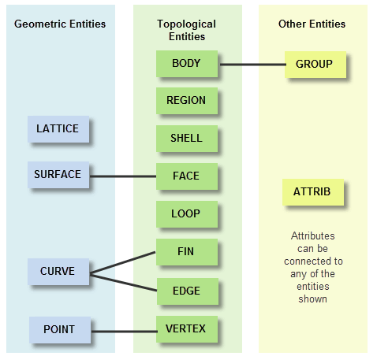
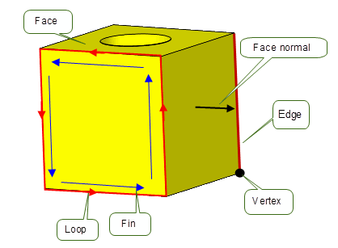
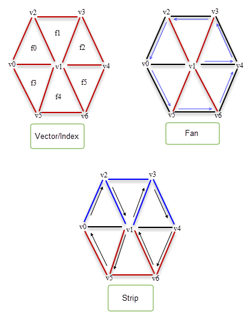
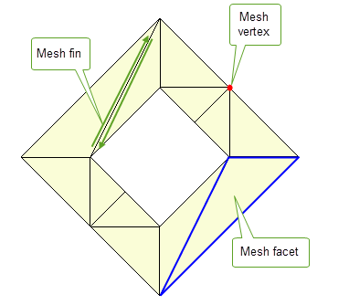
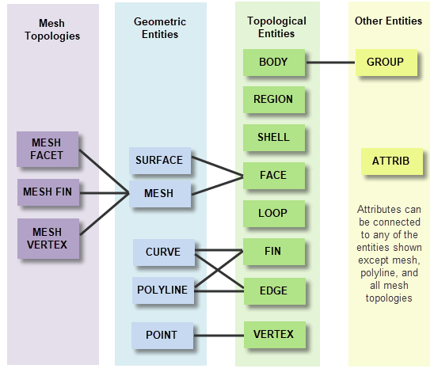
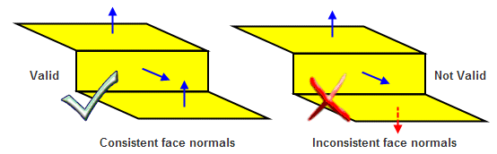
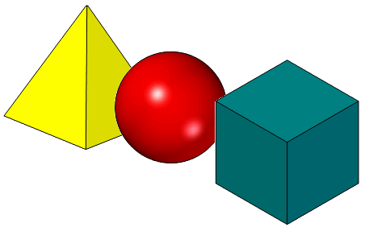
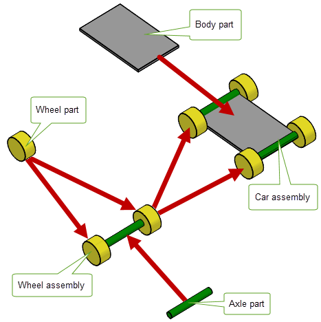
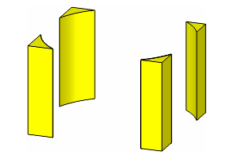

| |
Model Structure |
| <<< About Parasolid | Chapters | Booleans and Related Functionality >>> |
This chapter describes the major modelling entities that Parasolid uses to create its model structure, and how they are combined so as to construct a Parasolid model. The entities available fall into three broad categories: topological, geometric and associated data. Their general relationships are shown in the following diagram:
Figure 3-1 Relationships between Parasolid entities
It is essential for both Parasolid and for your application to be able to identify different entities in a model. Parasolid provides two methods for doing this:
For more information about Parasolid sessions, see Section 15.3, “Partitions and roll-back” and, in particular, Section 15.3.1, “Concepts”.
Topological entities comprise all the entities that are used to construct the structure or skeleton of a model.
Bodies are fundamental to modelling with Parasolid. A body is composed of one or more connected entities, or components. Collections of related bodies that share some physical aspects (for instance, different representations of the same part), can be represented as compound bodies. Bodies can contain the topological entities shown in Figure 3-2
Figure 3-2 Topological entities in a body
Bodies also contain regions and shells, as described in Section 3.2.3 and Section 3.2.4 respectively.
For a fully defined, valid model, every face, edge and vertex in a body requires an attached geometric entity: a surface, curve or point.
More information about bodies is given in Section 3.7, “More about bodies”.
A facet body is one with Parasolid topology that references geometric data composed of mesh and polyline data (often referred to collectively as facet data), rather than classical Parasolid surface and curve geometry. A mesh is a surface subtype which encapsulates an application’s mesh data for one or more Parasolid face. A polyline is a curve subtype and describes a connected chain of linear segments. Parasolid can read in external mesh data in one of four forms; index, strip, fan, and vector, which are shown in Figure .
Figure 3-3 Types of meshes that are supported
Facet bodies can contain the mesh topologies shown in Figure 3-4.
Figure 3-4 Mesh topologies on a facet body
The relationship between mesh topologies and Parasolid entities are shown in Figure 3-5
Figure 3-5 Relationship between mesh topologies and Parasolid entities
See Chapter 8, “Convergent Modeling” for more information on Convergent Modeling.
A region is a connected subset of 3-dimensional space bounded by a collection of vertices, edges and oriented faces. Regions are either solid (contain material) or void (empty).
Bodies always have an infinite void region, which you can think of as all the space outside of the body itself. The sum of all regions in a body comprises the whole of 3D space.
For example, Figure 3-6 shows a hollow cube that contains three regions:
Figure 3-6 Hollow cube consisting of three regions
Regions contain a set of shells that define the topological structure of the parts in the body.
|
Note: A face is a two-dimensional analogy of a region. An edge is a one-dimensional analogy of a region. A vertex is the zero-dimensional analogy of a region. |
A shell is a connected collection of oriented faces (each face used by the shell on one or both sides of the face) and edges. The shells in a region do not overlap or share faces, edges or vertices.
|
Note: A loop is the two-dimensional analogy of a shell. |
In a solid body, the normals of each face must always point away from the solid region:
Figure 3-7 Face normals of (a) solid body and (b) an inner shell
Sometimes, a modelling operation may create a negative body, that is, a body whose face normals point the wrong way. Such bodies can easily be negated.
For sheet bodies, face normals must also point away from the body. The face normals in a sheet body must be consistent, as shown in Figure 3-8.
Figure 3-8 Face normals of sheet bodies
Loops, fins and edges have directions, and Parasolid defines the following conventions for their relationships to face normals and to each other:
Figure 3-9 Loop directions of the top face of a cube with a cylindrical hole
The direction of the loop around a face determines the direction of the edges and fins of that face:
Geometries entities are used to specify the geometric shape of a body. These geometries are referred to as principal geometry. In a completely defined part, geometric entities are attached to topological entities according to the relationships shown in Figure 3-1.
Figure 3-10 Examples of 3D geometric shapes
You can also attach geometry directly to a body to form construction geometry, as a means of keeping relevant entities with the body. For example, you might want to attach a point to a body that represents its center of gravity.
Parasolid also supports orphan geometry, which is not attached to any topological entity. This is useful if you want to create geometry prior to using it in a body, for example, to create a surface before incorporating it into a body.
There are four main classes of geometric entity:
Only entities of surface, curve and point classes may also be attached directly to bodies as construction geometry.
In order to reduce the overall size of a model, geometry can be shared both within a single body, and across collections of bodies. Geometry can be shared in the following ways:
Parasolid supports a number of other entities so that you can manipulate and attach additional data to a model. The most useful ones are:
You can create more complex models in Parasolid by combining any number of bodies into larger assemblies that contain information about how the bodies contained in the assembly are structured. Figure 3-11 shows a trivial example in which a toy car assembly is created by combining a body part with a wheel assembly, which is itself created from a wheel part and an axle part.
Figure 3-11 Combining different bodies into more complex assemblies
Each component in an assembly is an instance of a part:
An assembly is therefore just a collection of instances, where each instance is a pointer to a part used in the assembly that references:
To support reuse of modelling data, assemblies can contain any number of instances of the same part. You can also attach construction geometry to an assembly.
Assemblies in Parasolid can only convey structural information about the components in the assembly. In particular, they do not in themselves constitute a complete assembly management system.
Assembly information in Parasolid is subject to a number of basic restrictions:
Figure 3-12 Cyclic and acyclic trees of assemblies and parts
A Parasolid model is very precise. All calculations are performed to fixed accuracies called the session precision and session angle precision.
To handle precision correctly, all parts of a body must lie inside the Parasolid size box. This is a box, 1000 units on each side and centered at the origin, that represents the whole of model space. Typically, the default unit in your application is set to one meter, giving 1 kilometer as the maximum size, in any one direction, that can be modeled.
Parasolid also supports the use of large transformations in situations where a body lies within the size box but can be positioned by a large transform outside the size box. This can be useful for example in designing factories when deciding where to position objects (such as machinery) around the factory. Each component of the factory is “small” but the factory itself may extend to a few kilometers in size.
Parts created by other modelers can be imported into Parasolid and used in modelling operations. However, such parts will almost certainly have been created in a modeler that uses a lower precision. Once imported, they may contain inconsistencies between their topological and geometric data: edges which, topologically, should meet at a common point have attached geometric data that does not intersect.
To enable Parasolid to model successfully with imported parts, you can set a local precision on the edges and vertices of any externally created part. The use of such local precisions is known as Tolerant Modelling.
When using Tolerant Modelling, think of edges as tubes and vertices as spheres. If you lower the precision, the tubes become thicker and the spheres become larger. To use Tolerant Modelling effectively, you need to examine the topology for each part and, where there is inconsistency in the data, lower the local precision until the geometric data intersects.
Edges and vertices which don’t have a local precision set are considered exact by Parasolid, and have a precision of one half of the session precision.
For a typical example of how Tolerant Modelling is used within Parasolid, see Section 11.2, “Trimmed surface import”.
Nominal geometry is a mechanism whereby edges that are locally tolerant may also reference a notional accurate curve.
Any edge which has local precision can have nominal geometry that defines the Parasolid body attached to its fins. These nominal curves must all lie within a precision pipe whose diameter is the edge’s local precision. Exact edges cannot have nominal geometry attached, because to do so would be meaningless.
Bodies in Parasolid are divided into the following broad categories:
Parasolid also provides functionality to check whether a body is valid. This is described in Section 3.7.3.
A manifold body is, broadly speaking, any body that can exist in the real world or could be manufactured. The following manifold body types are supported by Parasolid:
You might frequently progress through all of the manifold body types in the process of making a solid. Beginning with a minimal body, you can turn it into a wire by scribing lines onto it. Closing the profile turns it into a sheet, which needs a new surface. You can then sweep or swing the sheet to form a solid.
Any type of manifold body may be disjoint, that is, comprising several disconnected pieces. Using a single body to represent disjoint components in this way is a useful method of tracking data in a feature modeler. For example, Figure 3-13 shows the result of subtracting a cylinder from a block.
Figure 3-13 Manifold body consisting of four disconnected pieces
|
Note: The body in
Figure 3-13 could be represented as either a single disjoint solid or four separate solids. |
A general body is a collection of entities (faces, edges and vertices) and connected three dimensional regions into which space is divided by the entities. Each region is either solid or void, indicating whether or not it represents material. General bodies differ from manifold bodies in that they usually cannot exist in the real world.
General bodies can be any of the following:
When creating models, it is important to ensure that the model remains valid throughout (or, at least, at significant points in the design process). Parasolid supports functionality to let you check whether or not a body is valid, in order to:
Parasolid provides two methods for checking whether or not a body is valid:
In the case of full body checking, Parasolid offers options to let you control exactly what gets checked. You can choose to check for problems such as:
If local checking is on for a given function call, a standard set of checks are performed, as follows:
Checking can be a time consuming operation. For instance, when local checking is on, each affected face is checked to ensure it is consistent with itself and with every other face in the body. Despite this, local checking is usually much more efficient than full body checking, especially if the local operation only affects a small proportion of the body’s entities.
To save time, you can turn local checking off to when you are performing a sequence of local operations, or if you want one of the intermediate operations to create an invalid body. However, you should perform a full body check on the final body and, if this indicates an invalidity, you should roll back to a point before the appropriate local operation and try a different approach.
| <<< About Parasolid | Chapters | Booleans and Related Functionality >>> |